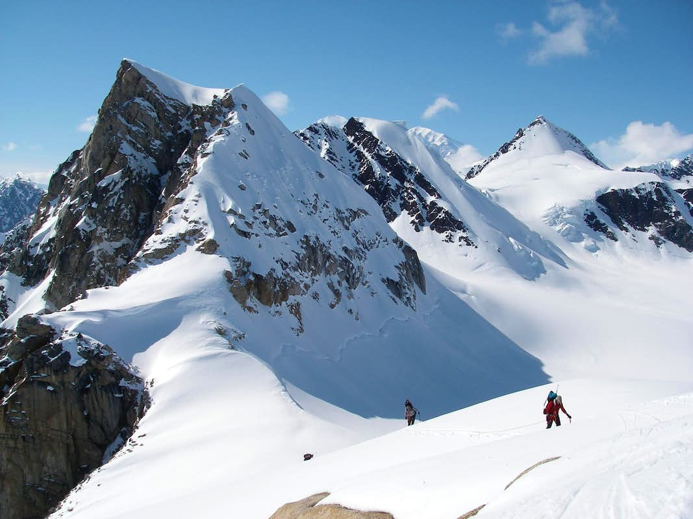

I visited Denali National Park a long time ago, but it was a great experience! I had never been to Alaska before, so that made it very unique in itself, but the coolest part was that I got to ride a helicopter up to Eldridge Glacier, which is on Mount Denali itself. Being on an actual glacier was definitely incredible!
In this national park, there are a lot of unique experiences. Most notably, I got to see a live volcano erupting from a distance away, which is definitely a one-of-a-kind view. Other opportunities include going on a submarine and visiting Mauna Kea, the tallest mountain in the world! (Though it's not the highest peak -- that's Everest.)
Mount Rainier is a place of scenic mountain views, and it's breathtaking. There are green forests that are home to many creatures, but up on the mountains there are only sparse pine trees and tiny wildflowers. Though I didn't climb the mountain itself, its silhouette in the distance provided a beautiful view!

Olympic National Park is close to Rainier, but it is definitely a very different place. There is a wide variety of climates and biomes, from lush temperate rainforests full of vegetation, to rocky beaches right on the edge of the Pacific Ocean. There's so much to explore and enjoy in this scenic location!